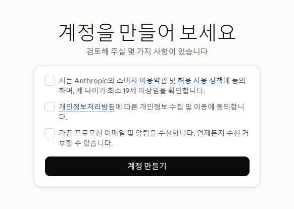
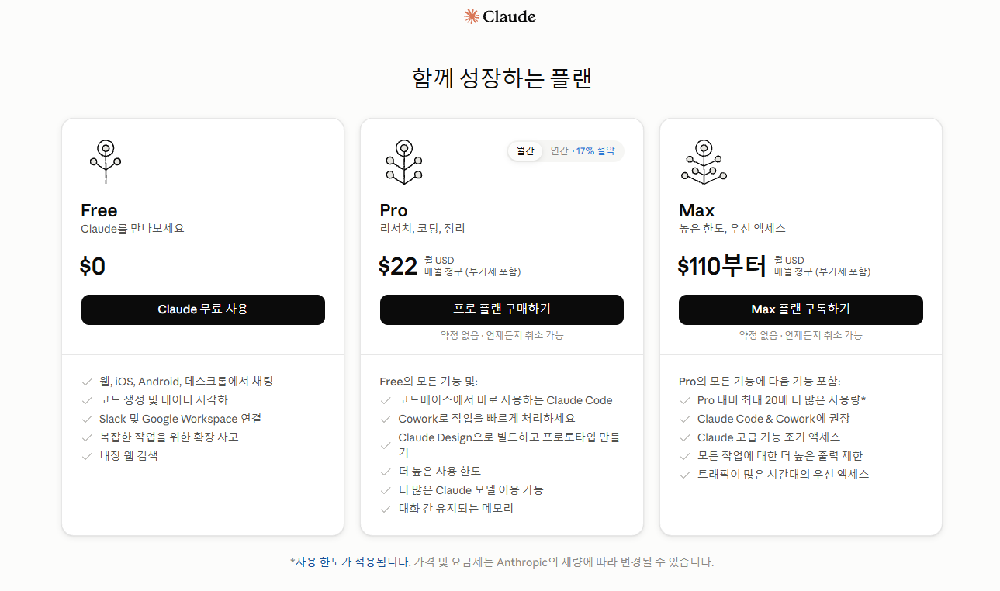
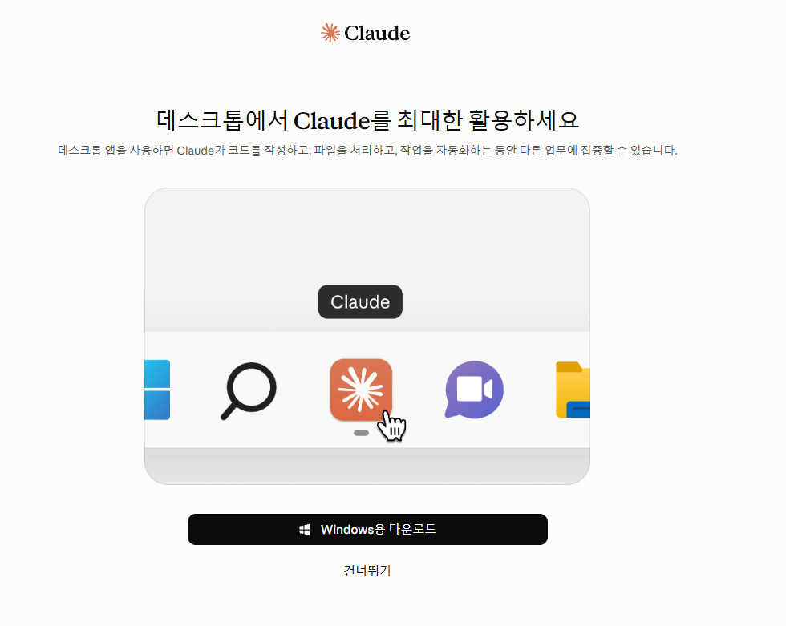
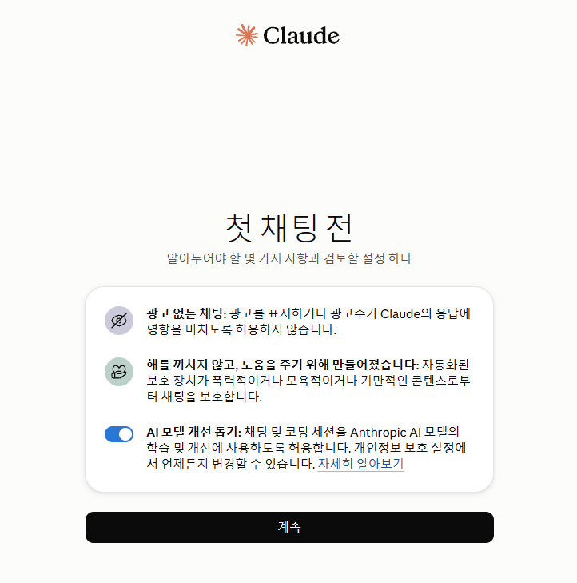
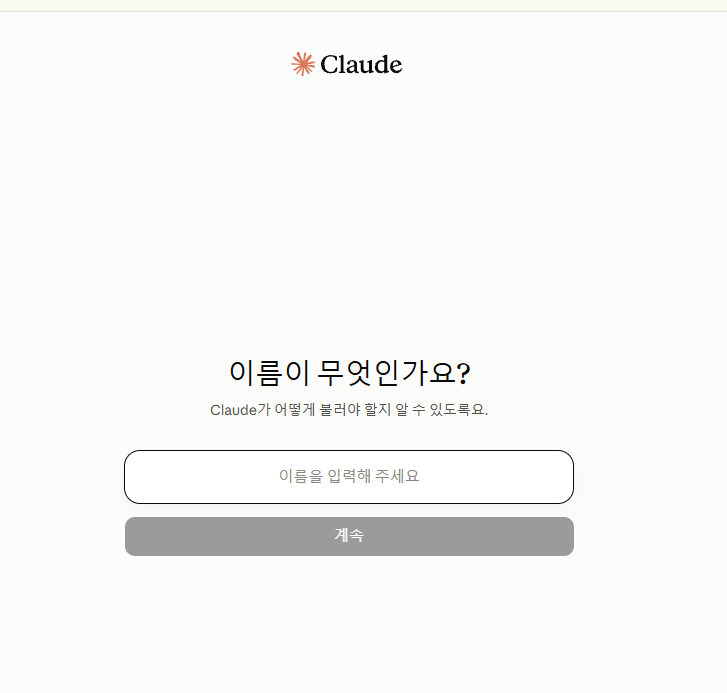
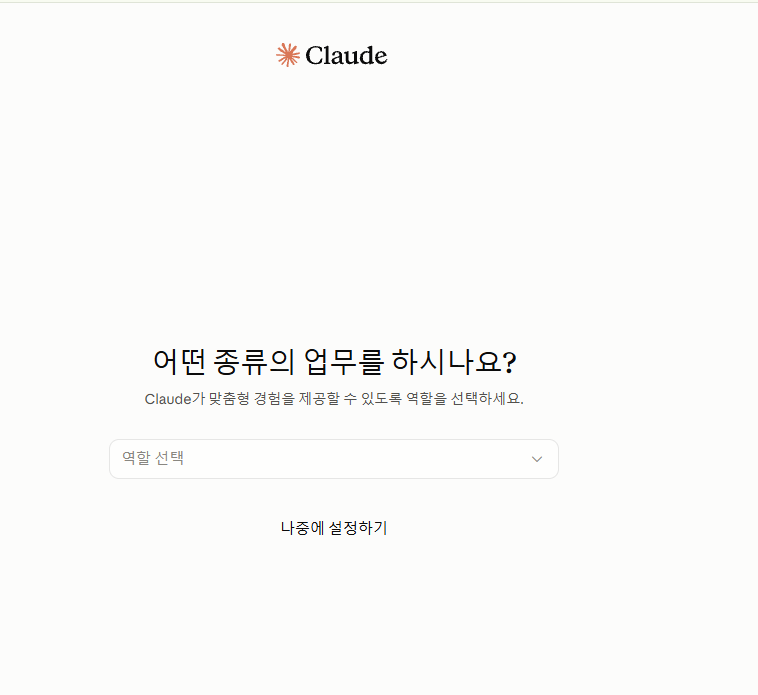

수업에서 처음 Claude에 가입하는 학생들을 위한 안내 자료입니다. 실제 가입 화면 순서 그대로 따라가며, 화면·언어 설정까지 이어서 정리했습니다.

계정을 만들어 보세요
약관 동의 체크박스 화면입니다. "저는 Anthropic의 소비자 이용약관 및 허용 사용 정책에 동의하며, 제 나이가 최소 19세 이상임을 확인합니다"라는 문구가 있으니, 미성년 학생이 있다면 이 단계에서 가입 가능 여부를 먼저 확인해주세요.

함께 성장하는 플랜
Free / Pro / Max 플랜 선택 화면입니다. 1~2회차 수업은 대부분 Free로 진행하면 충분합니다. 사용량이 늘거나 제한된 기능을 쓰려면 Pro로 결제해야 합니다.

데스크톱에서 Claude를 최대한 활용하세요
데스크톱 앱 설치를 권유하는 화면입니다. "건너뛰기"로 넘어가도 웹 사용에는 전혀 문제 없습니다. 데스크톱 앱은 이 가이드에서 다루지 않고, 수업 중간에 별도로 다룰 예정입니다.

첫 채팅 전
광고 없는 채팅, 안전 정책 안내와 함께 "AI 모델 개선 돕기" 토글이 있습니다. 화면 기본값은 켜짐입니다. 켜두면 이후 대화가 Anthropic의 모델 학습에 쓰일 수 있고, 끄면 이후 대화는 학습에 사용되지 않습니다(단, 안전 정책 위반이 감지된 대화는 예외적으로 안전 시스템 개선에 쓰일 수 있습니다). 가입 후에도 프로필 아이콘 → Settings → Privacy에서 언제든 바꿀 수 있습니다.

이름이 무엇인가요?
Claude가 이후 대화에서 어떻게 부를지 정하는 이름 입력 단계입니다.

어떤 종류의 업무를 하시나요?
답변 스타일을 맞추기 위한 선택 항목으로, 필수는 아닙니다.
건너뛰기 가능대화 입력창 바로 아래에 현재 사용 중인 모델 이름이 표시됩니다. 플랜에 따라 선택할 수 있는 모델이 다릅니다.
파일 첨부, 도구 연결 등 대화에 필요한 추가 기능을 여기서 불러올 수 있습니다.
이름(이니셜)을 클릭하면 언어, 외관, 계정 등 전체 설정(Settings) 메뉴로 이동합니다.
🌐 인터페이스 언어 바꾸기
가입 시 브라우저·기기의 언어 설정에 따라 화면이 자동으로 영어 등 다른 언어로 표시되는 경우가 있습니다. 아래 순서로 직접 바꿔줄 수 있습니다.
화면 언어를 무엇으로 두든 Claude와의 대화 자체는 한국어로 자유롭게 할 수 있습니다. 화면 언어와 대화 언어는 서로 별개입니다.
라이트/다크/시스템 테마와 기본·시스템 맞춤·난독증 친화 글꼴 중에서 고를 수 있습니다.
Settings → Appearance
위에서 안내한 대로 화면 표시 언어를 바꿀 수 있습니다. 대화 언어와는 무관합니다.
Settings → Language
여기에 적어둔 지시는 채팅과 Cowork 전체에서 항상 적용됩니다. 매 대화마다 같은 말투·형식을 반복 요청할 필요가 없습니다.
예: 위로·배려하는 말투 대신, 사실관계와 더 나은 방향 중심으로 답할 것
Settings → General → Claude 지침